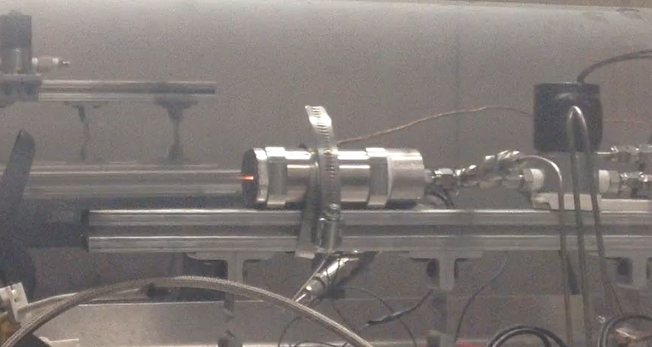
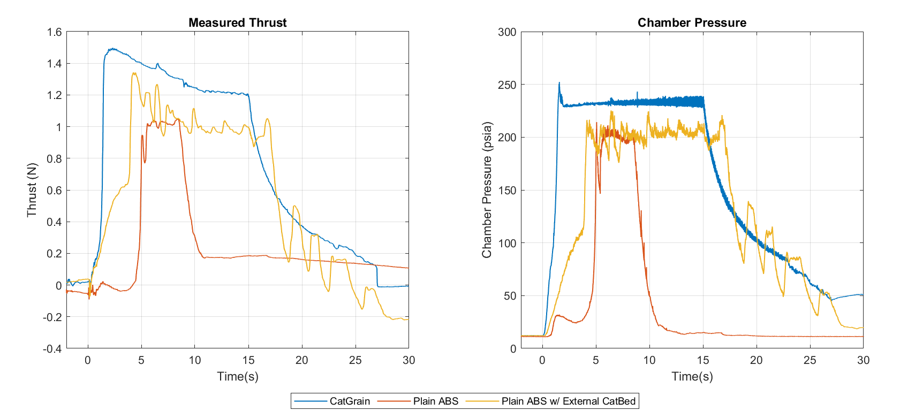

Background & Motivation
The growing SmallSat industry has created strong demand for compact, high-performance, and safe propulsion systems. Hydrazine — the current standard — is highly toxic, expensive to handle, and increasingly restricted by regulation. Both NASA and the USAF are actively pursuing green alternatives.
The USU Propulsion Research Laboratory and Space Dynamics Laboratory have collaborated for over a decade on High-Performance Green Hybrid Propulsion (HPGHP) technology using 3D-printed ABS fuel and an arc-ignition system. In its mature form with gaseous oxygen (GOX), this system achieves vacuum Isp exceeding 300 seconds — competitive with hydrazine.
The challenge: GOX requires high-pressure storage and is volumetrically inefficient for small satellites where volume is the tightest constraint. High-test hydrogen peroxide (HTP) is a far denser oxidizer — it would need to be stored at pressures exceeding 10,000 psi to match HTP's specific gravity. HTP/ABS hybrids show theoretical Isp of 324 seconds and density impulse of 4,450 N·s/liter. The problem is ignition.
HTP is a liquid under standard conditions and requires significant activation energy to decompose. When injected into a cold motor, it pools and can cause dangerous pressure spikes. Traditional solutions — GOX pre-lead or external catalyst beds — require extra hardware, power, and complexity that are prohibitive at the SmallSat scale.
The CatGrain Concept
This work developed the heterogeneous CatGrain: a 3D-printed ABS fuel grain post-infused with potassium permanganate (KMnO₄) catalyst using the principle of interstitial diffusion. The natural porosity and layer boundaries of FDM-printed ABS allow a pressurized aqueous KMnO₄ solution to diffuse uniformly through the grain structure. Notably, even when printed at 100% infill density, the catalyst loading achieved through this process is only approximately 1% by weight — a consequence of the inherently small interstitial gaps between printed layers that limit total catalyst uptake.

Manufacturing Process
- 3D print ABS fuel grain using FDM and measure initial mass
- Prepare aqueous KMnO₄ solution at maximum solubility for given temperature
- Load fuel grain into a pressure chamber and fill with solution
- Pressurize to 100 psig and place on rotating stand
- Soak for 24 hours to allow catalyst diffusion into grain pores and layer boundaries
- Release pressure, drain solution, remove CatGrain
- Oven-dry at 80°C for 8 hours to remove water content
- Measure final mass to calculate catalyst uptake

Why Heterogeneous, Not Homogeneous
An earlier approach attempted to dissolve catalyst directly into ABS filament before printing — the homogeneous method. This failed because the catalyst becomes encased in plastic and cannot react with HTP until the plastic is already burning. The heterogeneous post-infusion approach places catalyst at the grain surface where it is immediately accessible to the incoming oxidizer.
Vacuum Compatibility
Since this system targets in-space applications, the CatGrain must retain catalyst in the vacuum of space. Vacuum bake-out testing confirmed that after an initial loss, catalyst content stabilizes at approximately 0.5% by weight — and drip tests on vacuum-baked grains still demonstrate strong catalytic activity. The system is space-compatible.
Test Campaign
Testing was conducted at Space Dynamics Laboratory using an inverted pendulum thrust sled with a load cell for direct thrust measurement. Thrust, chamber pressure, and temperature data were acquired via LabVIEW. A custom MATLAB code processed mass flow rates, Isp, thrust coefficient, characteristic velocity, and combustion efficiency.
Three configurations were compared: HTP/ABS neat (baseline — no ignition aid), HTP/ABS with external catalyst bed, and the CatGrain. All three used the same arc-ignition system.

Results & Performance
Comparison to Baseline Systems
| Configuration | Rise Time | Combustion Efficiency | Extra Hardware |
|---|---|---|---|
| Plain ABS (no ignition aid) | ~5 seconds | Not measurable | None |
| External Catalyst Bed | ~5 seconds | ~62% | Catbed, pre-heat system |
| CatGrain (optimized) | ~0.5–0.9 seconds | 96.5% | None |

Optimized CatGrain Performance
After iterating on grain length (shortened from 1.6" to 1.1" to optimize O/F ratio while maintaining combustion length) and refining the motor casing, the optimized CatGrain demonstrated:
Rise time of 0.9 seconds · Vacuum Isp up to 270 seconds · O/F ratio of 3.66 (equivalence ratio 1.94) · Combustion efficiency of 96.5% · Successful reignition demonstrated
Rise time reduced by an order of magnitude vs. baseline · Combustion efficiency of 96.5% · Vacuum Isp up to 270 seconds at O/F ratio of 3.66 (equivalence ratio 1.94) · Successful reignition demonstrated. This O/F ratio is more fuel-rich than the peak characteristic velocity (c*) value — CEA analysis indicates that hitting the optimal O/F ratio would push vacuum Isp beyond 320 seconds, exceeding hydrazine performance.
Additional Observations
The CatGrain also demonstrated improved safety: in misfire events, injected HTP decomposes near-instantaneously on contact with exposed KMnO₄ rather than pooling in the chamber — eliminating the risk of sudden overpressure events that can rupture the motor casing.
No nozzle erosion was observed across all HTP tests. Operating on the fuel-rich side of stoichiometric (equivalence ratio ~2.0) prevents a sufficiently oxidizing environment from forming at the graphite nozzle.
An atypical burn regression pattern was observed due to direct HTP impingement from the full-cone spray injector. The tight motor geometry forces erosive burning toward the injector end early in the burn, transitioning to conventional radial regression over time — rendering traditional Marxman regression rate models inaccurate for this configuration.
Conclusions & Future Work
The heterogeneous CatGrain is a validated, patent-pending approach to solving the ignition latency problem in HTP-based hybrid propulsion — without the hardware overhead of GOX pre-lead or external catalyst beds. It functions as a true drop-in replacement for GOX in a GOX/ABS hybrid motor and is more flight-ready than any prior approach at this scale.
At TRL-4, the system is ready for adaptation toward a flight design. Future work includes optimization of catalyst-doped mesh materials for staged decomposition, injector redesign to mitigate erosive burning of the ignition cap, and scaling investigations for higher thrust levels relevant to the CubeSat and SmallSat market.
Further optimization of the O/F ratio is also needed to shift combustion toward peak c* and maximize Isp — the current configuration operates more fuel-rich than optimal, leaving meaningful performance on the table. Injector geometry modifications and oxidizer flow tuning are the primary levers for achieving this.
The catalyst infusion manufacturing technique has since been extended to solid fuel ramjet propellants — forming the basis of the Functionally Graded Fuel via AM project and the underlying patent-pending fabrication process.